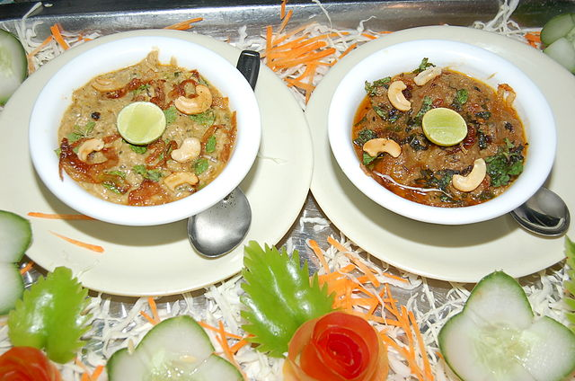

Chicken Haleem
Origiating from the city of Hyderabad in southern India, available only during Ramadan. It consists of chicken (or lamb) with lentils and spices, slow-cooked to a thick soupy consistency

Ingredients
- 3 tablespoons ghee (clarified butter)
- 2 medium onions, sliced
- 2 pods cardamom
- 5 whole cloves
- 1 (1 inch) piece cinnamon stick
- 2 large bay leaves
- 1 teaspoon cumin seeds
- 1 tablespoon ginger paste
- 1 tablespoon garlic paste
- 1 pound boneless, skinless chicken thighs, cut into bite-sized pieces
- ½ teaspoon salt, or more to taste
- 2 tablespoons split chick peas (chana dal), soaked
- 2 tablespoons split mung beans with skin (moong dal), soaked
- 3 tablespoons roasted split chickpeas (dalia), soaked
- 1 teaspoon cayenne pepper
- ½ teaspoon ground turmeric
- ½ teaspoon garam masala
- 3 cups water
- 3 tablespoons chopped fresh cilantro
- 10 leaves fresh mint, chopped
Steps
-
Heat ghee in a skillet over medium-low heat. Add onions, cardamoms, cloves, cinnamon stick, bay leaves, and cumin seeds. Cook and stir until onions are lightly browned, about 5 minutes. Add ginger paste and garlic paste and continue to saute for 2 minutes. Add chicken and 1/2 teaspoon salt; cook and stir until chicken is lightly browned, about 5 minutes.
- Transfer mixture to a slow cooker. Add chana dal, moong dal, dalia, cayenne pepper, turmeric, and garam masala. Pour water on top and mix to combine.
- Cook on Low for 10 to 12 hours, mixing in cilantro and mint 30 minutes before the end of the cook time.
- Remove bay leaves and cinnamon stick. Use a hand blender to lightly blend mixture, or skip this step of you like your haleem chunky. Serve hot.